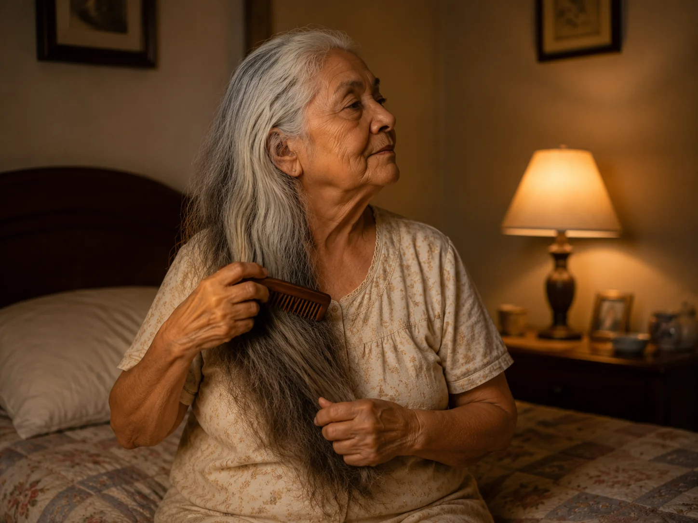

Hundred Strokes: The Bedtime Wooden-Comb Ritual
Every night before sleep, my grandmother sat on the edge of her bed and pulled a wide-toothed wooden comb through her hair one hundred times. It was the last quiet task of the day.

The sound after the dishes
The house had its own order at night. Dishes clicked in the sink, the bathroom door closed, and the bedside lamp came on. After those sounds, I heard the soft whisper of the comb from the next room. My grandmother loosened her daytime knot, sat on the edge of the bed, and began again at the hairline.
She never hurried. By the time she reached the last strokes, the comb rested against the same worn patch of her palm and the television in the front room had been turned down. The ritual was not a beauty routine. It was simply the final task that belonged to her alone.
Why one hundred strokes
The comb was made of wood and had wide, rounded teeth. The fine comb from the bathroom drawer was for parting hair in the morning; this one was for the evening. It moved without catching and made almost no sound against the strands.
One hundred was a complete number in her mind. Sometimes she counted silently, and sometimes she lost her place and started again. The count gave the hands a small job while the rest of the day fell away. It was the same kind of gentle boundary as the walk after dinner: a little time between one part of the day and the next.
The comb on the nightstand
When the count was finished, the comb went on the nightstand beside a glass of water and a small jar of hairpins. She wiped the teeth with the corner of a cloth once a week, then put it back in exactly the same place.
I asked her once whether the hundred strokes made her sleep better. She looked at the comb rather than at me. “It makes the day feel finished,” she said. The answer stayed with me because nothing in it needed to be proven. The comb, the count, and the quiet room were enough to close the door on the hours behind her.